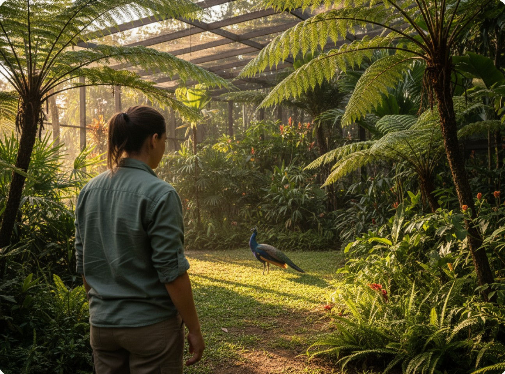

Origem transparente
Informações de criação e documentação acessíveis. A procedência deve ser conhecida, nunca presumida.
Sobre a amazonasleilao
Acreditamos que admirar o extraordinário também · cuidar. Por isso, imaginamos um jeito mais transparente de conectar pessoas e criadouros responsáveis.
Somos um conceito de plataforma de leilões legais de animais de criação. Aqui, tecnologia simplifica a informação · sem deixar de lado a origem, as exigências legais e o bem-estar de cada animal.
Transparência · o nosso ponto de partida.

O que não · negociável
Antes de qualquer conexão, vêm os princípios que orientam cada escolha.
Informações de criação e documentação acessíveis. A procedência deve ser conhecida, nunca presumida.
Bem-estar, estrutura adequada e orientação de cuidado são essenciais em todas as etapas.
Uma experiência simples para entender os lotes, consultar condições e decidir com mais consciência.
Pessoas por trás da ideia
Equipe fictícia deste projeto
Operações e relacionamento
Tecnologia e experiência
Conteúdo e bem-estar animal